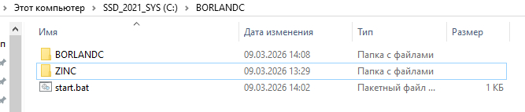
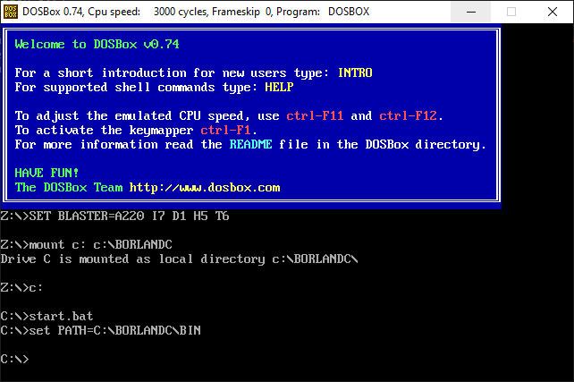
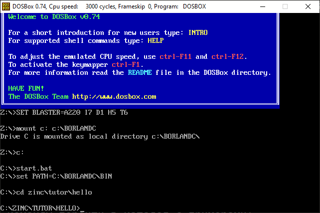
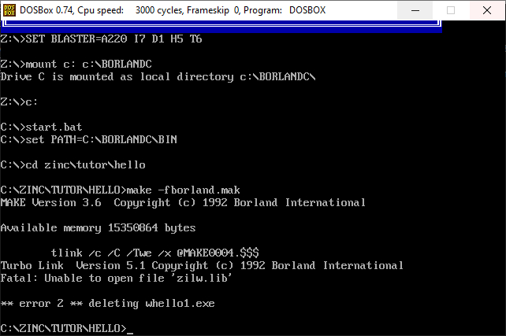
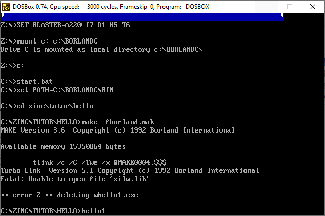
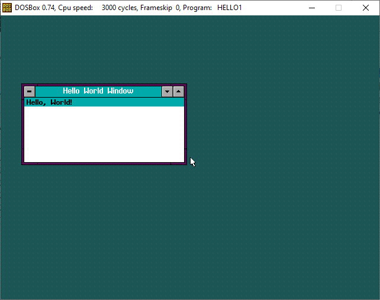

Для начала работы в библиотекой ZINC необходимо скачать и установить DosBox.
Далее необходима сама библиотека ZINC. Скачиваем ZINC и под MS-DOS DosBox устанавливаем командой install.exe.
Далее необходимо иметь Borland C++ 3.11.
Иерархия каталогов с которой будет работать DosBox следующая:

В DosBox Options в самом конце добавляем нашу папку на диске C:
mount c: c:\BORLANDC c:
Далее заходим в папку C:\BORLANDC\BIN и модифицируем файлы:
TURBOC.CFG -ID:\BORLANDC\INCLUDE -LD:\BORLANDC\LIB -I.;C:\ZINC\INCLUDE;C:\BORLANDC\INCLUDE -L.;C:\ZINC\LIB_B30;C:\BORLANDC\LIB
TLINK.CFG -LD:\BORLANDC\LIB -L.;C:\ZINC\LIB_B30;C:\BORLANDC\LIB
Эти модификации файлов позволяют получить доступ из вашего приложения во время компиляции к Include/Lib файлам.
Далее создаем файл start.bat такого содержания:
set PATH=C:\BORLANDC\BIN
Этот файл поможет находить утилиту make для компиляции CPP файлов.
Теперь запускам DosBox.
После запуска DosBox даем команду start.bat:

Теперь даем команды перейти в каталог с примерами:

Далее даем команду запуска компиляции примеров:
make -fborland.mak
Получаем такой вывод:

Теперь примеры скомпилировались, можно запускать:


Важно помнить что для работы программы необходимы файлы из папки C:\BORLANDC\BIN поэтому важно перед стартом программы запустить файл start.bat.